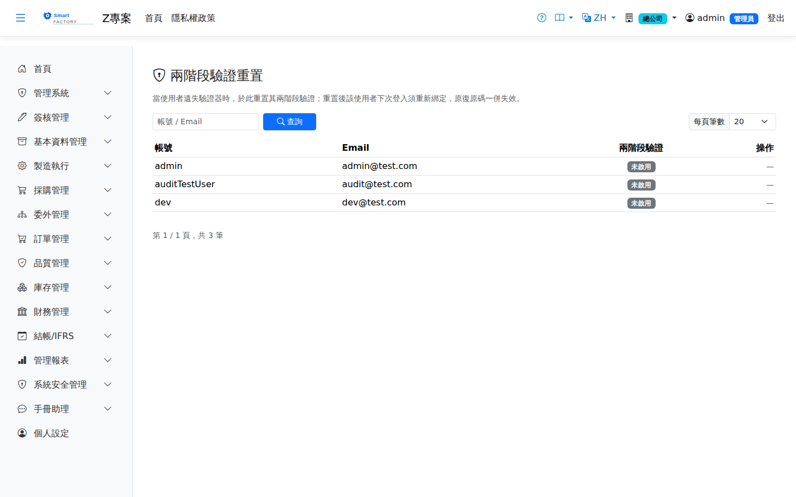

兩階段驗證重置Two-Factor Reset
選單位置：管理系統 → 兩階段驗證重置 | 權限：目前身份為 AdminMenu: System Administration → Two-Factor Reset | Permission: current role is Admin
兩階段驗證管理是Two-factor administration is the 遺失驗證器時的救援畫面rescue screen for a lost authenticator：當某位使用者換了手機、刪掉驗證器 App，又用完或遺失復原碼而登不進系統時，由管理員在此替他重置兩階段驗證。: when somebody changes phone, deletes their authenticator app and has run out of or lost their recovery codes, an administrator resets their two-factor authentication here.

兩階段驗證管理畫面截圖（示意，實際資料依查詢條件而異）Two-factor administration screenshot (illustrative; the data shown depends on the search)
畫面欄位Screen fields
| 欄位名稱Field | 說明Guide |
|---|---|
| 帳號／EmailUser name / e-mail | 使用者的識別資訊。上方搜尋框可同時比對這兩欄。How the user is identified. The search box above matches on both. |
| 兩階段驗證狀態Two-factor status | 已啟用／未啟用。已啟用者才有東西可重置。Enabled or not. Only an enabled one has anything to reset. |
| 重置Reset | 替該使用者停用兩階段驗證並清除其驗證器金鑰。狀態為「未啟用」的人沒有這個按鈕，操作欄顯示「—」——沒有東西可重置。Turns two-factor authentication off for that user and clears their authenticator key. Somebody whose status is "not enabled" has no such button — the column shows a dash, because there is nothing to reset. |
本畫面與其他查詢畫面不同：Unlike the other search screens, this one 一進來就直接列出使用者lists users as soon as you open it，不需要先按「查詢」。清單最多顯示 200 筆，人數多時請用上方搜尋框縮小範圍。, with no need to click "Search" first. At most 200 rows are shown, so use the search box to narrow it down when there are many people.
操作步驟Steps
替使用者重置兩階段驗證Resetting two-factor authentication for a user
1
先以其他方式確認申請者身分（當面、電話或主管確認）。這個動作等同解除該帳號的第二道防線。Confirm who is asking by some other means first — in person, by telephone or through their manager. This action removes the second line of defence on that account.
2
點選左側選單「管理系統 > 兩階段驗證重置」，在搜尋框輸入帳號或 Email。Choose "System Administration > Two-Factor Reset" in the left-hand menu and type the user name or e-mail in the search box.
3
找到該使用者，點「重置」。畫面上方會顯示已重置的確認訊息。Find the user and click "Reset"; a confirmation message appears at the top of the screen.
4
請對方重新登入。系統會要求他重新綁定驗證器並取得新的復原碼。Ask them to sign in again; the system will require them to re-enrol an authenticator and take a fresh set of recovery codes.
重置會讓舊金鑰與舊復原碼全部失效：A reset invalidates the old key and all old recovery codes:重置後，對方原本手機上的驗證器產生的驗證碼 after the reset the codes produced by the authenticator already on their phone 再也不能用no longer work，先前列印保存的復原碼也一併作廢。若對方其實只是把驗證器 App 移到新手機、原本的金鑰還在，請, and any recovery codes printed earlier are void as well. If they have in fact only moved the authenticator to a new phone and still have the key, 不要重置do not reset。.
誰必須啟用兩階段驗證Who must have two-factor authentication
系統預設By default the system 強制 Admin 角色啟用requires it for the Admin role兩階段驗證：具管理員角色卻尚未啟用的人，登入後會被直接導向設定畫面，在完成綁定前無法使用系統的其他功能。: somebody with the administrator role who has not yet enabled it is taken straight to the setup screen after signing in and cannot use anything else until enrolment is complete.
| 情況Situation | 結果Result |
|---|---|
| 被強制的角色，尚未啟用A role that is required to have it, not yet enabled | 登入後強制導向兩階段驗證設定頁，完成綁定才能繼續。Redirected to the two-factor setup page after sign-in; nothing else until enrolment is done. |
| 其他角色Other roles | 不強制，但可自行到個人的兩階段驗證設定頁啟用。Not required, but they may enable it themselves on their own two-factor setup page. |
| 重置之後After a reset | 若對方屬於被強制的角色，下次登入會再次被要求綁定——這是預期行為，不是重置失敗。If they belong to a role that requires it, they are asked to enrol again at their next sign-in. That is expected, not a failed reset. |
哪些角色被強制、以及是否整組停用強制，屬於部署層級的設定，不在畫面上調整；如需變更請洽系統維護人員。現場共用終端使用的角色通常刻意不列入強制名單。Which roles are required to use it, and whether the requirement is switched off altogether, are deployment-level settings rather than something changed on screen; ask whoever maintains the installation. Roles used on shared shop-floor terminals are usually left out of the requirement on purpose.